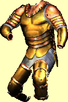

Artefakty
Dodatek zima 2010/2011: Následující seznam artefaktù obsahuje stejnì jako ostatní pøedmìty v sekcích originální popisky pøímo ze hry. Ov¹em pøekladatelé se místy dopustili men¹ích chybek v nejednotnosti názvosloví a tak nìkteré vlastnosti pøedmìtù mohou pùsobit trochu zmatenì. Namísto vlastnosti Odolnost je zde pou¾it pojem Výdr¾, namísto Rychlosti je to Hbitost a Odolnosti proti elementùm jsou pou¾ity ve zkrácené formì jako Ochrana (u relikvií je tomu zas o trochu jinak). Naproti tomu u efektu Zlodìjství se mi nepodaøilo jeho úèinek objasnit (dovednost Zlodìjství neboli Kradení není v ¹estém díle navíc vùbec implementována). Efekt Upíøí je popsán jako stav, kdy jsou pøi úspì¹ném zásahu pøená¹eny body zdraví na nositele. Efekt Bo¾ské znaèí +10 k základním vlastnostem a efekt Masakr se dá pøirovnat k seslání kouzla ohnivá koule. Efekt ©tít by mohl znaèit podobu s kouzlem ©tít, ale nepodaøilo se mi to nijak ovìøit. Podobnì je tomu u efektù posilujících urèitou skupinu magických dovedností, kdy nelze øíci, o kolik tyto dovednosti opravdu zvedají, resp. jakým zpùsobem vùbec tyto dovednosti zvy¹ují. Ostatní efekty by pak u¾ mìly být z popiskù jasné, napø. bonusy k zásahu urèité skupiny nestvùr nebo rychlej¹í zotavení ze zásahu.
 |
Jméno: | Arthur |
| V jejich nekoneèné snaze o vytvoøení perfektního Knìze-Krále stvoøili knì¾í Církve Slunce Arthura a prodchli ho silou zvý¹it nositelovu osobní schopnost, stejnì jako získat více magické energie. Fungovalo to, zvy¹ujíce moc jejich krále -- a jeho pýchu. V roce 1073, Leopold VII. zaèal svatou válku proti rivalùm v Církvi Mìsíce, rozdrcujíce obì organizace do chudoby a koneènì vedouce k jejich zániku. (Speciální síly: 'Bo¾ské' a +25 Mana) | ||
| Cena: | 20000 | |
 |
Jméno: | Conan |
| Útok: | +10 | |
| Zranìní: | 3d7+10 | |
| Tato mocná sekyra je oèarována ke znièení drakù a ïáblù. Zná zpùsoby, jak "najít" majitele, který pravdìpodobnì na takové stvùry narazí a je dostateènì silný, aby s nimi bojoval. (Speciální síly: Zabíjení démonù a drakù) | ||
| Cena: | 20000 | |
| Jméno: | Excalibur | |
| Útok: | +12 | |
| Zranìní: | 3d4+12 | |
| Tì¾ký, aè zdánlivì lehký jako pírko v devedných rukách, Excalibur svému majiteli propùjèuje velkou sílu. Rány udílené touto legendární zbraní mù¾e pøe¾ít opravdu jen málokdo. (Speciální síly: +30 Síla) | ||
| Cena: | 20000 | |
 |
Jméno: | Galahad |
| Zbroj: | +38 | |
| Snad nejlep¹í krou¾kové brnìní vyrobené od Ticha, èarovná síla Galahadových materiálù je tak silná, ¾e se èásteènì pøená¹í na nositelovo tìlo, umo¾òující mu vydr¾et mnohem více ne¾ normálnì. (Speciální síly: Ochrana a +25 ¾ivotù) | ||
| Cena: | 20000 | |
 |
Jméno: | Guinevere |
| Guinevere byl vytvoøen Alchymistickou gildou pod kameny hradu Kriegspire pøed mnoha lety. Zvy¹uje magické zdroje pou¾itelné jeho nositelem a usnadòuje pou¾ití kouzel Zrcadlové cesty. (Speciální síly: +30 Mana, 'Bílá magie' a 'Èerná magie') | ||
| Cena: | 20000 | |
 |
Jméno: | Igraine |
| Lord Solomon Stone mìl tento prsten vybrat bìhem své dr¾by úøadu Veleknìze Cesty v 1018. Prsten zvy¹uje u¾ivatelovu schopnost v klerikální magii. (Speciální síly: +25 Mana a 'magie du¹e, mysli a tìla') | ||
| Cena: | 20000 | |
 |
Jméno: | Lucius |
| Zbroj: | +14 | |
| Nikdo neví, kde byly tyto magické boty vyrobeny, ale mnohé pøíbìhy o nich vyprávìjí, jak se zjevili na nejneobvyklej¹ích místech. Svému nositeli propùjèují nadlidskou rychlost a pùvab pohybu. (Speciální síly: +30 Síla) | ||
| Cena: | 20000 | |
| Jméno: | Merlin | |
| Útok: | +8 | |
| Zranìní: | 2d4+8 | |
| Pùvodnì pou¾ívaný Arcidruidem, ale ztracený bìhem svárù okolo nábo¾enské doktríny, Merlin se chová jako rezervoár kouzelné síly, kterou majitel mù¾e kdykoliv èerpat. Navíc je oèarován hbitostí, tak¾e rány na nepøátele jen pr¹í, mnohem rychleji ne¾ u obyèejné hole. (Speciální síly: Hbitost a +40 Mana) | ||
| Cena: | 20000 | |
| Jméno: | Mordred | |
| Útok: | +8 | |
| Zranìní: | 2d3+8 | |
| Jedno z devíti takových ostøí na svìtì, Mordred byl vyroben Bratrstvem v roce 428 P. T. jako èást jejich prvních experimentù s vývojem Èerné magie. Jejich nadìjí bylo najít cestu k prodlou¾ení jednoho lidského ¾ivota za cenu jiného, ale místo otáèení vìkù sotva na¹li cestu, jak krást zdraví. (Speciální síly: upíøí) | ||
| Cena: | 20000 | |
 |
Jméno: | Morgan |
| Pøesto¾e je Morganùv pùvod neznámý, mìl v posledních stech letech mnoho majitelù, o nikom z nich ale nikdo pøed jeho nalezením nic nesly¹el. Amulet je toti¾ tak mocný, ¾e ve skuteènosti ka¾dé dítì pasáka, které na nìj polo¾í své ruce, má jistotu, ¾e se urèitì stane legendou své doby. (Speciální síly: +20 Mana a 'magie ohnì, vzduchu, vody a zemì') | ||
| Cena: | 20000 | |
|  | Jméno: | Pellinore |
| Zbroj: | +56 | |
| Pojmenována po starodávném rytíøi, Pellinore zlep¹uje nositelovu odolnost, tak¾e se ten léèí z vá¾ných zranìní ji¾ v prùbìhu hodin. Zbroj je celkem tì¾ká a chrání nositele od zásahù bìhem boje. (Speciální síly: +30 Výdr¾, zotavení ze zásahu a regenerace ¾ivotù) | ||
| Cena: | 20000 | |
 |
Jméno: | Pendragon |
| Zbroj: | +11 | |
| Tento plá¹» pùvodnì patøil Alastairovi Blanovi, Mistrovi zlodìjovi z Gildy Stínù. Plá¹» výbornì zvy¹oval jeho ¹tìstí a urèité zlodìjské dovednosti, umo¾òujíce mu dosáhnout dlouhé prosperující kariéry. Blane nebyl nikdy pohnán pøed soud za své zloèiny -- byl místo toho zavra¾dìn pøi kartách za podvádìní. (Speciální síly: +30 ©tìstí, Zlodìjství, Imunita pøed jedem) | ||
| Cena: | 20000 | |
 |
Jméno: | Percival |
| Støelba: | +10 | |
| Zranìní: | 5d2+10 | |
| Percival vznikl v Luèi¹tnické gildì v roce 912 P. T. jako prototyp nové zbranì, kterou tehdy vyvíjeli. Nane¹tìstí v gildovní síni propukl podezøelý oheò, nièíc vývojové plány a exotické materiály potøebné k tvorbì dal¹ích Percivalù. Gilda se ze svých ztrát nikdy nevzpamatovala a Percivala v roce 918 P. T. prodala elfùm. Od té doby u¾ mnohoktát zmìnil majitele. (Speciální síly: Hbitost a Masakr) | ||
| Cena: | 20000 | |
| Jméno: | Thor | |
| Útok: | +12 | |
| Zranìní: | 2d5+12 | |
| Pùvod Thoru je sice ztracen v èase, ale tato mocná barbarská zbraò byla pou¾ívána v mnohých bitvách mnoha majiteli po staletí, naposledy v bitvì u Shimengardu v roce 902 P. T. Síla úderu tohoto kladiva je tak silná, ¾e mù¾e odhodit nepøátele nìkolik stop daleko od majitele. (Speciální síly: Síla) | ||
| Cena: | 20000 | |
| Jméno: | Valeria | |
| Zbroj: | +20 | |
| Schváleno králem Davidem IV. z Erathie bìhem Válek o døevo, Valeria za¹tituje u¾ivatele nejen pøed normálními ranami, ale pomáhá mu zadr¾et mnoho pøilétajících ¹ípù tím, ¾e magicky zaostøí nositelovu pozornost na let projektilu. To samé oèarování, které umo¾òuje ¹títový efekt, také enormnì zvy¹uje nositelovu pøesnost (Speciální síly: ©tít a +30 Pøesnost) | ||
| Cena: | 20000 | |